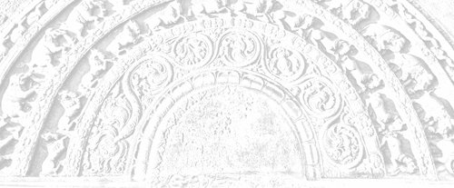

Sermon 16
Namo tassa bhagavato arahato sammāsambuddhassa
Namo tassa bhagavato arahato sammāsambuddhassa
Namo tassa bhagavato arahato sammāsambuddhassaEtaṁ santaṁ, etaṁ paṇītaṁ,
yadidaṁ sabbasaṅkhārasamatho sabbūpadhipaṭinissaggo
taṇhakkhayo virāgo nirodho nibbānaṁ.1“This is peaceful, this is excellent,
namely the stilling of all preparations, the relinquishment of all assets,
the destruction of craving, detachment, cessation, extinction.”
With the permission of the Most Venerable Great Preceptor and the assembly of the venerable meditative monks. This is the sixteenth sermon in the series of sermons on Nibbāna.
In the course of our discussion of the Bāhiyasutta in our last sermon, we drew attention to the wide gap that exists between the sensory experience of the worldling and that experience the arahant gets through the eye of wisdom.
It is the same gap that obtains between the two terms papañca and nippapañca. In sensory experience, which is based on worldly expressions, worldly usages and worldly concepts, there is a discrimination between a thing to be grasped and the one who grasps, or, in other words, a subject-object relationship.
There is always a bifurcation, a dichotomy, in the case of sensory perception. If there is a seen, there has to be something seen and the one who sees. That is the logic. In the Bāhiyasutta, beginning with “in the seen there will be just the seen”, the Buddha proclaimed to the ascetic Bāhiya a brief exhortation on Dhamma which enables one to transcend the above narrow view point and attain the state of non-proliferation or nippapañca.
There is nothing to see, no one to see, only ‘a seen’ is there. The cause of all these conceptual proliferation, or papañca, in the world is contact. The arahants understood this by their insight into the fact that the seen, the heard, the sensed and the cognized are simply so many collocations of conditions which come together for a moment due to contact, only to break up and get dispersed the next moment.
What is called the seen, the heard, the sensed and the cognized are for the worldling so many ‘things’. But to the wisdom eye of the arahants they appear as mere conglomerations of conditions, dependent on contact, which momentarily come together and then get dispersed. This insight into the dependence on contact, phassam paṭicca, is the very essence of the law of dependent arising, paṭicca samuppāda. It is equivalent to seeing the law of dependent arising itself.
In order to transcend the narrow point of view limited to the bases of sense contact or the six sense spheres and realize the state of Nibbāna indicated by the words viññāṇaṁ anidassanaṁ, anantaṁ sabbato pabhaṁ,2 “consciousness which is non-manifestative, endless, lustrous on all sides”, one has to see the cessation of contact.
In a certain discourse in the Mucalindavagga of the Udāna, the Buddha has declared in a verse of uplift that the cessation of contact comes about only by doing away with that which brings about contact. The wandering ascetics of other sects grew jealous of the Buddha and his congregation of monks, because of their own loss of gain and honour, and began to hurl abuse on monks in the village and in the forest.
A group of monks came and reported this to the Buddha. The Buddha’s response to it was only a paean of joy. Udāna actually means a spontaneous utterance of joy, and the verse he uttered was such a one. But it embodied an instruction on Dhamma and a norm of Dhamma as well.
Gāme araññe sukhadukkhaphuṭṭho,
nev’attato no parato dahetha,
phusanti phassā upadhiṁ paṭicca,
Nirūpadhiṁ kena phuseyyum phassā.3
In the first two lines we get an instruction:
Touched by pain in village or in forest,
Think not in terms of oneself or others
The reason for it is given in the norm of Dhamma which follows:
Touches can touch one, because of assets,
How can touches touch him, who is asset-less?
This is all what the Buddha uttered. From this we can glean another aspect of the significance of the terms sabbūpadhipaṭinissagga, relinquishment of all assets, and nirupadhi, the asset-less, used with reference to Nibbāna.
In a number of previous sermons we happened to explain the concept of upadhi to some extent, as and when the terms upadhi and paṭinissagga came up.4 To refresh our memory, we may summarize all that now. What is the concept of upadhi, or ‘assets’, recognized by the world?
Whatever that bolsters up the ego, be it gold, silver, pearls, gems, money, house and property, deposits and assets. All these are reckoned as upadhi in general. But when considered from the point of view of Dhamma, upadhi in a deeper sense stands for this fivefold grasping groups, pañcupādānakkhandha.
Upādānakkhandha literally means ‘groups of grasping’. Groups of grasping do not necessarily imply that there are material objects to be grasped. But the worldling, overcome by that triple proliferation of cravings, conceits and views, and carried away by the worldly conventions, imagines those groups of grasping as things grasped and deposited.
The concept of upadhi as assets has arisen as a result of this tendency to think of groups of grasping as things grasped and deposited. So it turns out to be a question of viewpoint.
Cravings, conceits and views prompt one to look upon all what one has grasped so far and what one hopes to grasp in the future as things one is grasping right now. One thinks of them as things deposited in a safe. The worldlings are holding on to such a mass of assets.
Nibbāna is the relinquishment of all such assets, accumulated in the mind. In order to relinquish these assets there must be some kind of understanding – an enlightenment. The vanity of all these assets has to be seen through by the light of wisdom. It is only by seeing their vanity that the assets are relinquished. In fact it is not so much a deliberate giving up of assets, as a sequential liquidation.
In a previous sermon we gave an illustration of the situation that precipitates relinquishment. Let us bring it up again. We found the cinema quite helpful as an illustration. In explaining the phenomenon of relinquishment of assets with reference to the cinema, we described how the assets accumulated in the minds of the audience, that is, the assets proper to the cinema world woven around the story that is filmed, are automatically abandoned when the cinema hall gets lit up.5 Then one understands the illusory nature of what has been going on. It is that understanding, that enlightenment, which precipitates the giving up or relinquishment of assets.
To go a step further in this illustration, when lights came on the saṅkhāras or preparations pertaining to the film show got exposed for what they are. In fact, saṅkhāra is a word that has associations with the dramatic tradition in its relation to the acting of actors and actresses down to their make-up, which is so artificial and spurious.
When the cinema hall gets lit up all of a sudden, one who has been enjoying the film show is momentarily thrown out of the cinema world, because those preparations are pacified or nullified, sabba saṅkhārasamatho. As a consequence of it, the heap of experiences which he had hitherto regarded as real and genuine, lose their sanction. Those assets get liquidated or relinquished, sabbūpadhipaṭinissagga.
In their absence, that craving necessary for the appreciation or enjoyment of the scenes to come becomes extinct, taṇhakkhayo. When craving is gone, the floridity of the scenes to come also fades away, virāga. With that fading away or decolouration, the film show ceases for the person concerned, nirodha, though technically the movie is going on. Because of that cessation all the fires of defilements proper to the cinema world, with which he was burning, get extinguished, Nibbāna.
So here we have the full gamut of the cinema simile as an illustration for Nibbāna. This kind of awakening in the cinema world gives us a clue to the fact that the assets, upadhi, are relinquished through an understanding born of enlightenment in the light of wisdom. This in fact is something that should be deeply ingrained in our minds. Therefore we shall endeavour to give some more illustrations to that effect.
In our everyday life, too, we sometimes see and hear of instances where assets get relinquished due to understanding. Someone heaps up a huge bundle of currency notes of the highest denomination, deposits it in his safe and keeps watch and ward over it day and night. One fine morning he wakes up to hear that for some reason or other that currency note has been fully devalued by law the previous night. How does he look upon the wads of notes in his safe now? For him, it is now a mere heap of papers.
The craving, conceit and view he had earlier in regard to the notes are completely gone. The bank notes are no longer valid. He might as well make a bonfire of it. So this is some sort of relinquishment of assets in the world, however temporary it may be.
Another person gets a sudden transfer and is getting ready to leave for his new station. His immovable assets he is forced to leave behind, but his movable assets he hurriedly gathers up to take with him. The vehicle has already come and is tooting impatiently, signalling delay. It is well past time, but his ‘preparations’ are not finished. Time-pressed, in hot haste, he is running here and there.
At last, when he can delay no longer, he grabs the utmost he can take and darts to the doorstep. Just then, he wakes up. It was only a dream! The transfer came in a dream. No real vehicle, no real preparation, only a panting for nothing!
So here we have an ‘awakening’ peculiar to the dream world. This is an instance of letting go of assets connected with a dream. We go through such experiences quite often. Of course, we take it for granted that when we pass from the dream world to the real world, the assets proper to the dream world drop off. But are we sure that in leaving the dream world we are entering a real world? Is awakening from a dream a true awakening when considered from the point of view of the Dhamma? Do we actually open our eyes, when we awaken from a dream?
Terms like Buddha, bodhi and sambodhi convey the sense of awakening as well as understanding. Sometimes in the Dhamma the emphasis is on the sense of awakening. Here then is a kind of awakening.
Expressions like dhammacakkhu, ‘Dhamma-eye’, paññācakkhu, ‘Wisdom-eye’, and cakkhuṁ udapādi, ‘the eye arose’, bespeak of an arising of some sort of an eye. We already have eyes, but an eye is said to arise. All this goes to show that in the context of Nibbāna, where we are concerned with the deeper aspects of the Dhamma, the awakening from a dream is not a true awakening. It is only a passage from one dream world to another.
But let us see how the concept of upadhi, or assets, goes deeper. What lies before us is the dream of saṁsāra. In order to awaken from this dream, we have to understand somehow the vanity of all assets connected with the dream that is saṁsāra.
The fact that this understanding also comes through some illumination we have already explained the other day in our discussion of the paean of joy at the end of the Bāhiyasutta.6 As we pointed out then, the world of the six sense-bases which the worldlings regard as ‘their world’, when examined against the background of that Udāna verse reveals itself to be no more than six narrow beams of light, appearing through a solidly thick curtain, namely the darkness of delusion.
We happened to mention the other day that the sun, the moon and the stars shine precisely because of the presence of darkness. In the non-manifestative consciousness which is infinite and lustrous all round, viññāṇaṁ anidassanaṁ, anantaṁ sabbato pabhaṁ, sun, moon and stars are not manifest, because there is absolutely no darkness for them to shine forth. Even the formless, which is the penumbra of form, disappears in that penetrative lustre of wisdom.
So the relinquishment of all assets, Nibbāna, is not like the other temporary awakenings already mentioned. Those three instances of awakening are of a temporary nature. The awakening in the cinema world is extremely short lived. That film fan, although he became disenchanted with the scenes because of the unexpected sudden illumination of the cinema hall, when it is dark again, influxes of sensuality, existence and ignorance so overwhelm him that he gets engrossed in the cinema world as before.
The case of the devalued currency note is also like that. Though the cravings, conceits and views about the devalued note are gone, one still runs after notes that are valid. As for the awakening from a dream, we all know that it is temporary. When again we go to sleep, we have dreams.
But the awakening in Nibbāna is not of such a temporary character. Why? Because all the influxes that lead one into the saṁsāric slumber with its dreams of recurrent births are made extinct in the light of that perfect knowledge of realization. That is why the term āsavakkhaya, extinction of influxes, is used in the discourses as an epithet of Nibbāna. The arahants accomplish this feat in the concentration on the fruit of arahanthood, arahattaphalasamādhi.
Though there are enough instances of references to this arahattaphalasamādhi in the discourses, they are very often interpreted differently. As we have already seen in the context of that verse of uplift in the Bāhiyasutta, some discourses alluding to the nature of an arahant’s mind have been misinterpreted, so much so that there is a lot of confusion in regard to the concept of Nibbāna.
As a matter of fact, that concentration peculiar to an arahant is of an extraordinary type. It baffles the worldling’s powers of understanding. This can well be inferred from the following verse of the Ratanasutta:
Yaṁ Buddhaseṭṭho parivaṇṇayī suciṁ,
samādhim ānantarikaññam āhu,
samādhinā tena samo na vijjati,
idampi Dhamme ratanaṁ paṇītaṁ,
etena saccena suvatthi hotu.7That pure concentration,
which the Supremely Awakened One extolled,
That concentration which the Noble Ones call ‘immediate’,
(ānantarika)
There is no concentration comparable to it,
This is the excellent jewel nature of the Dhamma,
By the power of this truth may there be well-being.
This incomparable and extraordinary concentration has given rise to many problems concerning the concept of Nibbāna. The extraordinariness of this concentration of the arahant is to some extent connected with the term ānantarika, referred to above. Now let us turn our attention to the significance of this term.
The verse says that the concentration of the arahant is also known as ānantarika. The term ānantarika is suggestive of an extraordinary aspect of the realization of Nibbāna. Immediately after the extinction of the defilements through the knowledge of the path of arahanthood one realizes Nibbāna, the cessation of existence or the cessation of the six sense-bases. As we mentioned earlier, it is as if the results are out as soon as one has written for an examination.8 One need not wait for the results. Realization is immediate.
There is a special term to denote this experience of realization, namely, aññā. It is a highly significant term, derived from ājānāti, ‘to know fully’. Aññā is ‘full comprehension’.
The concentration of the fruit of arahanthood is also called aññāphalasamādhi and aññāvimokkha.
Aññā carries with it a high degree of importance. We come across in the sutta terminology a number of terms derived from the root ñā, ‘to know’, namely saññā, viññāṇa, paññā, ñāṇa, abhiññā, pariññā, aññā.
Saññā is ‘perception’,
viññāṇa is, radically, ‘discriminative knowledge’,
paññā is ‘distinctive knowledge’,
ñāṇa is ‘knowledge’ as such,
abhiññā is ‘specialized knowledge’,
pariññā is ‘comprehensive knowledge’,
aññā is that ‘final knowledge’ of certitude through realization.
The high degree of importance attached to aññā is revealed by the following two verses in the Itivuttaka:
Sekhassa sikkhamānassa
ujumaggānusārino
khayasmiṁ paṭhamaṁ ñāṇaṁ
tato aññā anantarā.Tato aññā vimuttassa,
ñāṇaṁ ve hoti tādino
akuppā me vimuttī’ti
bhavasaṁyojanakkhaye.9
To the disciple in higher training, as he fares along
Training according to the straight path,
There arises first the knowledge of extinction,
And then immediately the final knowledge of certitude.And to that steadfast such-like-one,
Thus released by final knowledge of certitude,
There arises the thought:
‘Unshakeable is my deliverance’,
Upon the destruction of fetters of existence.
It is evident from these two verses that the realization referred to is in many ways final and complete. In point of fact, these two verses have been presented by the Buddha in this context by way of defining three things relevant to the realization of Nibbāna. These three are called faculties, indriya. They are:
- anaññātaññāssāmīt’indriya
- aññindriya
- aññātāvindriya
The term aññā is implicit even in the faculty called anaññātaññāssāmīt’indriya. Anaññātaññāssāmi means “I shall know what has not been fully known”.
This is the definition of what in the verse is referred to as khayasmiṁ paṭhamaṁ ñāṇaṁ, “first there is the knowledge of extinction”. The knowledge of the extinction of the defilements is called anaññātaññāssāmīt’indriya in this context.
The words tato aññā anantarā, “and then immediately the final knowledge of certitude”, refer to that faculty of final knowledge, or aññindriya. The knowledge that prompts the conviction “unshakeable is my deliverance” is the knowledge and vision of deliverance, which is defined as aññātāvindriya. It refers to one who is endowed with the final knowledge of certitude.
The difference between aññindriya and aññātāvindriya is a subtle one. For instance, the expression bhuttāvī pavārito, one has finished eating and made a sign of refusal, decisively shows that one has had one’s fill.10
Similarly, it is that aññātāvindriya (note the past active participle), which prompts the words “unshakeable is my deliverance”, akuppā me vimutti.11 The knowledge and vision of deliverance is reassuring to that extent.
As the above quoted verse from the Ratanasutta makes it clear, this unique and extraordinary concentration has been extolled by the Buddha in various discourses. But for some reason or other, the commentators have simply glossed over references to it, though they sometimes expatiate on a particle of mere grammatical interest. Let us now take up for comment a few such discourses.
In the section of the Elevens in the Aṅguttara Nikāya there comes a discourse called Sandhasutta. There the Buddha gives to Venerable Sandha a description of a level of concentration characteristic of an excellent thoroughbred of a man. It is a strange type of concentration. One who has that concentration is described as follows:
So neva paṭhaviṁ nissāya jhāyati, na āpaṁ nissāya jhāyati, na tejaṁ nissāya jhāyati, na vāyaṁ nissāya jhāyati, na ākāsānañcāyatanaṁ nissāya jhāyati, na viññāṇañcāyatanaṁ nissāya jhāyati, na ākiñcaññāyatanaṁ nissāya jhāyati, na nevasaññānāsaññāyatanaṁ nissāya jhāyati, na idhalokaṁ nissāya jhāyati, na paralokaṁ nissāya jhāyati, yam p’idaṁ diṭṭhaṁ sutaṁ mutaṁ viññātaṁ pattaṁ pariyesitaṁ anuvicaritaṁ manasā, tam pi nissāya na jhāyati, jhāyati ca pana.
Evaṁ jhāyiṁ ca pana, Sandha, bhadraṁ purisājānīyaṁ sa-indā devā sabrahmakā sapajapatikā ārakā’va namassanti:
Namo te purisājañña,
namo te purisuttama,
yassa te nābhijānāma,
yampi nissāya jhāyasi.12
In this discourse, the Buddha gives, as an illustration, the musing of a thoroughbred of a horse, which we shall drop for brevity’s sake. The musing of an excellent thoroughbred of a man is described as follows:
He muses not dependent on earth, water, fire, air, the sphere of infinite space, the sphere of infinite consciousness, the sphere of nothingness, the sphere of neither-perception-nor-non-perception, he muses not dependent on this world or on the world beyond, whatever is seen, heard, sensed, cognized, attained, sought after, traversed by the mind, dependent on all that he muses not – and yet he does muse.
Moreover, Sandha, to him thus musing the devas with Indra, with Brahmā and with Pajāpati even from afar bow down, saying:
“Homage to you, O thoroughbred of a man,
Homage to you, O most excellent of men,
For what it is on which you go on musing,
We are at a loss to comprehend.”
Though all possible objects of concentration are negated, the Buddha affirms that he does muse. Venerable Sandha, out of curiosity inquires:
But then how, Lord, does that thoroughbred of a man muse?
The Buddha explains that while in that state of concentration, the perception of earth in earth, for instance, is gone for him, pathaviyā pathavīsaññā vibhūtā hoti. So also in the case of other objects of the senses, such as water, fire, air, down to whatever is seen, heard, sensed, cognized, attained, sought after and traversed by the mind.
The verb vibhūtā, repeatedly used in this connection, is however differently interpreted in the commentary. It is paraphrased by pākaṭā, which means ‘clearly manifest’.13 This interpretation seems to distort the meaning of the entire passage.
It is true that in certain contexts vibhūta and avibhūta are taken to mean ‘manifest’ and ‘unmanifest’, since vibhava is a word which seems to have undergone some semantic development. However, its primary sense is sufficiently evident in the sutta terminology.
For instance, the twin term bhava/vibhava stands for ‘existence’ and ‘non-existence’. In this context, too, vibhūta seems to have a negative sense, rather than the sense of being manifest. Hence our rendering: “The perception of earth is gone for him”.
It is obvious enough by the recurrent negative particle in the first part of the sutta (neva paṭhaviṁ nissāya jhāyati, na āpaṁ nissāya jhāyati, etc.) that all those perceptions are negated and not affirmed as manifest. The commentator seems to have missed the true import of the sutta when he interprets vibhūta to mean ‘manifest’.
If further proof is required, we may quote instances where the word vibhūta is used in the suttas to convey such senses as ‘gone’, ‘departed’ or ‘transcended’.
In one of the verses we happened to quote earlier from the Kalahavivādasutta, there was the question posed: Kismiṁ vibhūte na phusanti phassā?14 “When what is not there, do touches not touch?”
The verse that follows gives the answer: Rūpe vibhūte na phusanti phassā.15 “When form is not there, touches do not touch.” In this context, too, vibhūta implies absence.
A clearer instance comes in the Posālamāṇavapucchā of the Pārāyanavagga in the Sutta Nipāta, namely the term vibhūtarūpasaññissa, occurring in one of the verses there.16
The canonical commentary Cūḷaniddesa, which the commentator often draws upon, also paraphrases the term with the words vigatā, atikkantā, samatikkantā, vītivattā,17 “gone, transcended, fully transcended, and superseded”.
So the word vibhūta in the passage in question definitely implies the absence of all those perceptions in that concentration. This, then, is a unique concentration. It has none of the objects which the worldlings usually associate with a level of concentration.
We come across a number of instances in the discourses, in which the Buddha and some other monks have been interrogated on the nature of this extraordinary concentration. Sometimes even Venerable Ānanda is seen to confront the Buddha with a question on this point.
In a discourse included in the section of the Elevens in the Aṅguttara Nikāya, Venerable Ānanda questions on the possibility of attaining to such a concentration with an air of wonderment:
Siyā nu kho, bhante, bhikkhuno tathārūpo samādhipaṭilābho yathā neva pathaviyaṁ pathavīsaññī assa, na āpasmiṁ āposaññī assa, na tejasmiṁ tejosaññī assa, na vāyasmiṁ vāyosaññī assa, na ākāsānañcāyatane ākāsānañcāyatanasaññī assa, na viññāṇañcāyatane viññāṇancāyatanasaññī assa, na ākiñcaññāyatane ākiñcaññāyatanasaññī assa, na nevasaññānāsaññāyatane nevasaññānāsaññāyatanasaññī assa, na idhaloke idhalokasaññī assa, na paraloke paralokasaññī assa, yam p’idaṁ diṭṭhaṁ sutaṁ mutaṁ viññātaṁ pattaṁ pariyesitaṁ anuvicaritaṁ manasā tatrāpi na saññī assa, saññī ca pana assa?18
Could there be, Lord, for a monk such an attainment of concentration wherein he will not be conscious (literally ‘percipient’) of earth in earth, nor of water in water, nor of fire in fire, nor of air in air, nor will he be conscious of the sphere of infinite space in the sphere of infinite space, nor of the sphere of infinite consciousness in the sphere of infinite consciousness, nor of the sphere of nothingness in the sphere of nothingness, nor of the sphere of neither-perception-nor-non-perception in the sphere of neither-perception-nor-non-perception, nor will he be conscious of a this world in this world, nor of a world beyond in a world beyond, whatever is seen, heard, sensed, cognized, attained, sought after, traversed by the mind, even of it he will not be conscious – and yet he will be conscious?
Whereas the passage quoted earlier began with so neva pathaviṁ nissāya jhāyati, “he muses not dependent on earth” and ended with the emphatic assertion jhāyati ca pana, “and yet he does muse”, here we have a restatement of it in terms of perception, beginning with neva pathaviyaṁ pathavīsaññī and ending with saññī ca pana assa. The Buddha answers in the affirmative and on being questioned as to how it is possible he gives the following explanation:
Idh’Ānanda, bhikkhu, evaṁ saññī hoti: Etaṁ santaṁ, etaṁ paṇītaṁ, yadidaṁ sabbasaṅkhārasamatho sabbūpadhipaṭinissaggo taṇhakkhayo virāgo nirodho nibbānan’ti. Evaṁ kho, Ānanda, siyā bhikkhuno tathārūpo samādhipaṭilābho …
Herein, Ānanda, a monk is thus conscious (evaṁ saññī): This is peaceful, this is excellent, namely the stilling of all preparations, the relinquishment of all assets, the destruction of craving, detachment, cessation, extinction. It is thus, Ānanda, that there could be for a monk such an attainment of concentration …
This, in fact, is the theme of all our sermons. Venerable Ānanda, of course, rejoiced in the Buddha’s words, but approached Venerable Sāriputta also and put forward the same question. Venerable Sāriputta gave the same answer verbatim.
Then Venerable Ānanda gave expression to a joyous approbation:
Acchariyaṁ āvuso, abbhutaṁ āvuso, yatra hi nāma satthu ca sāvakassa ca atthena atthaṁ vyañjanena vyañjanaṁ saṁsandissati samessati na viggahissati, yad idaṁ aggapadasmiṁ.
Friend, it is wonderful, it is marvellous, that there is perfect conformity between the statements of the teacher and the disciple to the letter and to the spirit without any discord on the question of the highest level of attainment.
These last words, in particular, make it sufficiently clear that this concentration is arahattaphalasamādhi, the concentration proper to an arahant. Here, then, is the experience of Nibbāna, extraordinary and unique.
Quite a number of discourses touch upon this samādhi. Let us take up some of the more important references. Venerable Ānanda is seen to pose the same question, rephrased, on yet another occasion. It runs thus:
Siyā nu kho, bhante, tathārūpo samādhipaṭilābho yathā na cakkhuṁ manasikareyya, na rūpaṁ manasikareyya, na sotaṁ manasikareyya, na saddaṁ manasikareyya, na ghānaṁ manasikareyya, na gandhaṁ manasikareyya, na jivhaṁ manasikareyya, na rasaṁ manasikareyya, na kāyaṁ manasikareyya, na phoṭṭhabbaṁ manasikareyya, na pathaviṁ manasikareyya, na āpaṁ manasikareyya, na tejaṁ manasikareyya, na vāyaṁ manasikareyya, na ākāsānañcāyatanaṁ manasikareyya, na viññāṇañcāyatanaṁ manasikareyya, na ākiñcaññāyatanaṁ manasikareyya, na nevasaññānāsaññāyatanaṁ manasikareyya, na idhalokaṁ manasikareyya, na paralokaṁ manasikareyya, yam p’idaṁ diṭṭhaṁ sutaṁ mutaṁ viññātaṁ pattaṁ pariyesitaṁ anuvicaritaṁ manasā tam pi na manasikareyya, manasi ca pana kareyya?19
Could there be, Lord, for a monk such an attainment of concentration wherein he will not be attending to the eye, nor to form, nor to the ear, nor to sound, nor to the nose, nor to smell, nor to the tongue, nor to taste, nor to the body, nor to touch, nor to earth, nor to water, nor to fire, nor to air, nor to the sphere of infinite space, nor to the sphere of infinite consciousness, nor to the sphere of nothingness, nor to the sphere of neither-perception-nor-non-perception, nor to this world, nor to the world beyond, whatever is seen, heard, sensed, cognized, attained, sought after, traversed by the mind, even to that he will not be attending – and yet he will be attending?
“There could be such a concentration”, says the Buddha, and Venerable Ānanda rejoins with his inquisitive: “How, Lord, could there be?” Then the Buddha gives the following explanation, which tallies with the one earlier given:
Idh’Ānanda, bhikkhu evaṁ manasi karoti: Etaṁ santaṁ, etaṁ paṇītaṁ, yadidaṁ sabbasaṅkhārasamatho sabbūpadhipaṭinissaggo taṇhakkhayo virāgo nirodho nibbānan’ti. Evaṁ kho, Ānanda, siyā bhikkhuno tathārūpo samādhipaṭilābho …
Herein, Ānanda , a monk attends thus: This is peaceful, this is excellent, namely the stilling of all preparations, the relinquishment of all assets, the destruction of craving, detachment, cessation, extinction. It is thus, Ānanda, that there could be such an attainment of concentration …
In the light of the foregoing discussion, we are now in a position to take up for comment that enigmatic verse of the Kalahavivādasutta, which in a previous sermon we left unexplained, giving only a slight hint in the form of a simile.20
Na saññasaññī na visaññasaññī,
no pi asaññī na vibhūtasaññī,
evaṁ sametassa vibhoti rūpaṁ,
saññānidānā hi papañcasaṅkhā.21
The general trend of this verse seems to imply something like this: The worldlings usually believe that one has to have some form of perception or other. But the one referred to in this verse is not percipient with any such perception, na saññasaññī.
As if to forestall the question, whether he is then in a swoon, there is the negation na visaññasaññī. A possible alternative, like a plane of existence devoid of perception, is also avoided by the emphatic assertion no pi asaññī. Yet another possibility, that he has gone beyond perception or rescinded it, is rejected as well with the words na vibhūtasaññī.
The third line says that it is to one thus endowed that form ceases to exist, while the last line seems to give an indication as to why it is so:
Saññānidānā hi papañcasaṅkhā,
for reckonings born of proliferation have perception as their source.
The nature of these reckonings we have already discussed at length. The conclusion here given is that they are rooted in papañca. Now the passages we have so far quoted are suggestive of such a state of consciousness. Briefly stated, even the emphatic tone characteristic of these discourses is sufficient proof of it.
For instance, in the first discourse we took up for discussion, there is the recurrent phrase na jhāyati, “does not muse”, with reference to all the possible objects of the senses, but at the end of it all comes the emphatic assertion jhāyati ca pana, “nevertheless, he does muse”.
Similarly the passage dealing with the saññā aspect starts with neva pathaviyaṁ pathavisaññī, “he is neither conscious (literally ‘percipient’) of earth in earth”, followed by a long list of negations, only to end up with an emphatic saññī ca pana assa, “but nevertheless he is conscious”.
So also in the passage which takes up the attending aspect and winds up with the assertion manasi ca pana kareyya, “and yet he will be attending”.
All this evidence is a pointer to the fact that we have to interpret the reference to the paradoxical state of consciousness implied by na saññasaññī na visaññasaññī etc. in the Kalahavivādasutta in the light of that unique concentration of the arahant - the arahattaphalasamādhi.
This is obvious enough even if we take into consideration the occurrence of the term papañcasaṅkhā in the last line of the verse in question. The worldly concepts born of the prolific tendency of the mind are rooted in perception. That is precisely why perception has to be transcended. That is also the reason for our emphasis on the need for freedom from the six sense-bases and from contact. The abandonment of papañcasaṅkhā is accomplished at this extraordinary level of concentration.
The immense importance attached to the arahattaphalasamādhi comes to light in the passages we have quoted. These discourses are abundant proof of the fact that the Buddha has extolled this samādhi in various ways. The verse beginning with na saññasaññī na visaññasaññī in particular points to this fact.
On an earlier occasion we gave only a clue to its meaning in the form of an allusion to our simile of the cinema. That is to say, while one is watching a film show, if the cinema hall is fully illuminated all of a sudden, one undergoes such an internal transformation, that it becomes questionable whether he is still seeing the film show. This is because his perception of the film show has undergone a peculiar change. He is no longer conscious of a film show, nor has he put an end to consciousness. It is a strange paradox. His gaze is actually a vacant gaze.
The verse in question expresses such a vacant gaze. When the six sense-bases of the arahant cease and the lustre of wisdom comes up, giving the conviction that all assets in the world are empty, the vision in the arahattaphalasamādhi is as vacant as that gaze of the man at the cinema. It is neither conscious, nor unconscious, nor non-conscious, nor totally devoid of consciousness. At that level of concentration even this material form is abandoned.
The line in the paean of joy in the Bāhiyasutta, which we came across the other day, atha rūpā arūpā ca, sukhadukkhā pamuccati,22 “and then from form and formless and from pleasure and pain is he freed”, can be better appreciated in the light of the foregoing discussion.
With the relinquishment of all assets, even this body and the experience of a form and of a formless, as well as pleasure and pain, cease altogether due to the cessation of contact. That is why Nibbāna is called a bliss devoid of feeling, avedayita sukha.23
Now as to this vacant gaze, there is much to be said, though one might think that it is not at all worth discussing about. If someone asks us: “What is the object of the gaze of one with such a vacant gaze”, what shall we say? The vacant gaze is, in fact, not established anywhere (appatiṭṭham). It has no existence (appavattaṁ) and it is object-less (anārammaṇaṁ). Even at the mention of these three terms, appatiṭṭham, appavattaṁ and anārammaṇaṁ, some might recall those highly controversial discourses on Nibbāna.24
Why do we call the vision of the arahant a vacant gaze? At the highest point of the development of the three characteristics impermanence, suffering and not-self, that is, through the three deliverances animitta, appaṇihita and suññata, the ‘signess’, the ‘undirected’ and the ‘void’, the arahant is now looking at the object with a penetrative gaze. That is why it is not possible to say what he is looking at. It is a gaze that sees the cessation of the object, a gaze that penetrates the object, as it were.
When the cinema hall is fully illuminated, the mind of the one with that vacant gaze at the film show does not accumulate the stuff that makes up a film. Why? Because all those cinema preparations are now stilled, cinema assets are relinquished and the craving and the passion for the cinema film have gone down, at least temporarily, with the result that the cinema film has ‘ceased’ for him and he is ‘extinguished’ within. That is why he is looking on with a vacant gaze. With this illustration one can form an idea about the inner transformation that occurs in the arahant.
From the very outset the meditator is concerned with saṅkhāras, or preparations. Hence the term sabbasaṅkhārasamatha, the stilling of all preparations, comes first. Instead of the arising aspect of preparations, he attends to the cessation aspect, the furthest limit of which is Nibbāna. It is for that reason that the term nirodha is directly applied to Nibbāna.
Simply because we have recapitulated the terms forming the theme of our sermons, some might think that the formula as such is some form of a gross object of the mind. This, in fact, is the root of the misconception prevalent today.
It is true that the Buddha declared that the arahant has as his perception, attention and concentration the formula beginning with etaṁ santaṁ etaṁ paṇītaṁ etc. But this does not mean that the arahant in his samādhi goes on reciting the formula as we do at the beginning of every sermon.
What it means is that the arahant reverts to or re-attains the realization he has already won through the lustre of wisdom, namely the realization of the stilling of all preparations, the relinquishment of all assets, the total abandonment of the five aggregates, the destruction of craving, dispassion, cessation and extinguishment. That is what one has to understand by the saying that the arahant attends to Nibbāna as his object.
The object is cessation, nirodha. Here is something that Māra cannot grasp, that leaves him utterly clueless. This is why Venerable Nandiya in the Nandiyatheragāthā challenges Māra in the following verse:
Obhāsajātaṁ phalagaṁ,
cittaṁ yassa abhiṇhaso,
tādisam bhikkhum āsajja
kaṇha dukkhaṁ nigacchasi.25The monk whose mind is always bright,
And gone to the fruit of arahanthood,
Should you dare to challenge that monk,
O Blackie, you only come to grief.
Kaṇha, Blackie, is one of the epithets of Māra. Even gods and Brahmas are unable to find out the object of the arahant’s mind when he is in the phalasamāpatti, the attainment to the fruit. Māra can never discover it. That is why this attainment is said to leave Māra clueless or deluded (Mārassetaṁ pamohanaṁ).26 All this is due to the uniqueness of this level of concentration.
The three deliverances animitta, appaṇihita and suññata, are indeed extraordinary and the verse na saññā saññī refers to this arahattaphalasamādhi, which is signless, undirected and void.
Usually one’s vision alights somewhere or picks up some object or other, but here is a range of vision that has no horizon. In general, there is a horizon at the furthest end of our range of vision. Standing by the seaside or in a plain, one gazes upon a horizon where the earth and sky meet. The worldling’s range of vision, in general, has such a horizon. But the arahant’s range of vision, as here described, has no such horizon. That is why it is called anantaṁ, endless or infinite. Viññāṇaṁ anidassanaṁ, anantaṁ sabbato pabhaṁ, “the non-manifestative consciousness, endless, lustrous on all sides.”
That vacant gaze is an ‘endless’ perception. One who has it cannot be called conscious, saññī. Nor can he be called unconscious, visaññī – in the worldly sense of the term. Nor is he devoid of consciousness, asaññī. Nor has he put an end to consciousness, vibhūtasaññī.
Let us now take up two verses which shed a flood of light on the foregoing discussion and help illuminate the meaning of canonical passages that might come up later. The two verses are from the Arahantavagga of the Dhammapada.
Yesaṁ sannicayo natthi,
ye pariññāta bhojanā,
suññato animitto ca,
vimokkho yesa gocaro,
ākāse va sakuntānaṁ,
gati tesaṁ durannayā.Yass’āsavā parikkhīṇā,
āhāre ca anissito,
suññato animitto ca,
vimokkho yassa gocaro,
ākāse va sakuntānaṁ,
padaṁ tassa durannayaṁ.27Those who have no accumulations,
And understood fully the subject of food,
And whose feeding ground
Is the void and the signless,
Their track is hard to trace,
Like that of birds in the sky.He whose influxes are extinct,
And is unattached to nutriment,
Whose range is the deliverance,
Of the void and the signless,
His path is hard to trace,
Like that of birds in the sky.
The accumulation here meant is not of material things, such as food. It is the accumulation of karma and upadhi, assets. The comprehension of food could be taken to imply the comprehension of all four nutriments, namely gross material food, contact, will and consciousness. The feeding ground of such arahants is the void and the signless. Hence their track is hard to trace, like that of birds in the sky.
The term gati, which we rendered by ‘track’, has been differently interpreted in the commentary. For the commentary gati is the place where the arahant goes after death, his next bourne, so to speak.28
But taken in conjunction with the simile used, gati obviously means the ‘path’, padaṁ, taken by the birds in the sky. It is the path they take that cannot be traced, not their destination.
Where the birds have gone could perhaps be traced, with some difficulty. They may have gone to their nests. It is the path they went by that is referred to as gati in this context. Just as when birds fly through the sky they do not leave behind any trace of a path, even so in this concentration of the arahant there is no object or sign of any continuity.
The second verse gives almost the same idea. It is in singular and speaks of an arahant whose influxes are extinct and who is unattached to nutriment. Here, in the simile about the birds in the sky, we find the word padaṁ, ‘path’, used instead of gati, which makes it clear enough that it is not the destiny of the arahant that is spoken of.
The commentary, however, interprets both gati and padaṁ as a reference to the arahant’s destiny. There is a tacit assumption of some mysterious anupādisesa Nibbānadhātu. But what we have here is a metaphor of considerable depth. The reference is to that unique samādhi.
The bird’s flight through the air symbolizes the flight of the mind. In the case of others, the path taken by the mind can be traced through the object it takes, but not in this case. The key word that highlights the metaphorical meaning of these verses is gocaro. Gocara means ‘pasture’. Now, in the case of cattle roaming in their pasture one can trace them by their footsteps, by the path trodden. What about the pasture of the arahants?
Of course, they too consume food to maintain their bodies, but their true ‘pasture’ is the arahattaphalasamādhi. As soon as they get an opportunity, they take to this pasture. Once they are well within this pasture, neither gods nor Brahmas nor Māra can find them. That is why the path taken by the arahants in the phalasamādhi cannot be traced, like the track of birds in the sky.
We have yet to discuss the subject of sa-upādisesa and anupādisesa Nibbānadhātu. But even at this point some clarity of understanding might emerge. When the arahant passes away, at the last moment of his life span, he brings his mind to this arahattaphalasamādhi. Then not even Māra can trace him. There is no possibility of a rebirth and that is the end of all. It is this ‘extinction’ that is referred to here.
This extinction is not something one gets in a world beyond. It is a realization here and now, in this world. And the arahant, by way of blissful dwelling here and now, enjoys in his every day life the supreme bliss of Nibbāna that he had won through the incomparable deliverances of the mind.